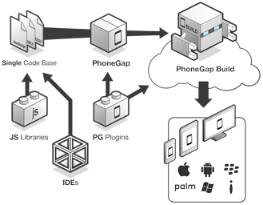
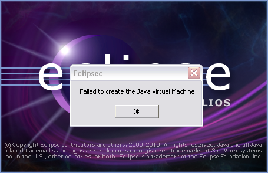
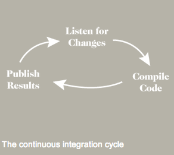

Hybrid Applications: Dev Workflow and Testing
Fil Maj, Master Exploder, Adobe
@filmaj
What I Do

Fil Maj
- Work at Adobe
- Drink beer
- Work on PhoneGap & Apache Cordova
- Drink beer
Hybrid Apps
Apache Cordova
Why PhoneGap?
Why go hybrid?
HTML5 == Portable
Native Means Access to APIs
(that you may not have on the ol' web)
- Accelerometer
- Contacts
- Compass
- Camera
- Monetization via App Stores
Plugins

- Add native capabilities
- Has consistent JavaScript API
- Can be cross-platform, doesn't have to be
Workflow
The Command Line
What is it good for?
IDEs Suck
Xcode. My arch-nemesis.
IDEs Suck, continued
Eclipse. No.
npm install -g cordova
$ cordova create myapp
$ cd myapp
$ cordova platform add android ios
$ cordova build && cordova emulate
Demo, part 1
Testing
Testing, cont.
Who cares?
Biggest embarassment as a programmer: regressions
Be disciplined at your craft: write a test for each bug
Run your tests after each change. This will prevent regressions.
Continuous Integration
CI automates the testing process. You get continuous feedback as your codebase evolves - in real-time
Testing Desktop
(and native mobile apps)
Established testing methods already in place.
- Selenium for desktop web apps
- Proprietary instrumentation for native mobile apps
- Automation available
Testing Mobile Web
Not so easy.
- "Rent" time from a device testing service
- Little to no automation (usually simulator based)
- Not much different from a monkey
Testing Hybrid Apps (PhoneGap/Cordova)
You get the worst of both worlds!
Introducing: medic
A distributed continuous integration testing system built for the mobile web
Mobile
Medic takes JavaScript test suites and deploys it to real mobile devices
Currently supports Android, iOS and BlackBerry 10
Web
Uses adapter(s) built on top of popular JavaScript testing frameworks to report results
Currently supports Jasmine BDD

Distributed
 <---
<---
- Each medic is a CI machine with connected mobile devices
- Each medic runs tests
- Each medic sends results to single CouchDB server which acts as aggregate
- Test results are displayed on a CI Dashboard
How PhoneGap Uses It
We run our HTML test suite (mobile-spec) with it
This makes sure the PhoneGap JavaScript API is working properly across a slew of devices after every commit
The medic Vision

A portable device testing lab! Clients have issues? No problem, have them install medic, send your configuration to them, and get back results.
DEMO

Thanks!
http://github.com/filmaj/medic
npm install -g cordova